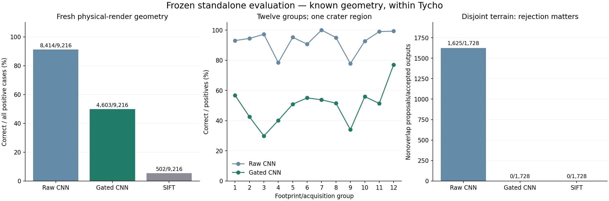

Measured research update · 30 October 2026
Frozen terrain evaluation and real-sensor checks
Model and rejection rule fixed before reserve access. The fresh experiment covers 64 patches in 12 footprint/acquisition groups. All remain within Tycho. The 13-predictor ensemble remains development-only.
Fresh physical-render results
9,216 changing-light/known-motion positives and 1,728 disjoint-terrain negatives. Rejections and failed fits remain in the denominators.
| Method | Correct positives | Wrong positive outputs | Nonoverlap outputs |
|---|
| CNN raw proposal | 8,414/9,216 | 306 | 1,625/1,728 |
| CNN with frozen rejection | 4,603/9,216 | 0 | 0/1,728 |
| SIFT | 502/9,216 | 0 | 0/1,728 |
Predeclared empirical targets met: True. An observed rate is not a deployment guarantee.

Actual lunar photo controls
The fixed gated model retains 334/336 correct known-warps and rejects 84/84 different-scene pairs across Chang’e 3, Apollo 11 and near Shackleton. This verifies controlled motion on real image pixels. It does not verify changing-light repeat-observation accuracy.
Real physical relighting exposes a weakness
On four NASA laboratory terrains, raw CNN nominally aligns 4/8 fixed-camera relighting pairs within 3px, but the strict gate retains 0/8. This transfer failure remains visible. External laser-reference diagnostics are included with unknown calibration uncertainty.
What remains unverified
Real orbital navigation accuracy, broad polar/cross-crater illumination transfer, and fresh performance of the full ensemble remain unverified. Both original reserves are consumed; future changes require new untouched evaluation data.
Full measured report and reproduction commands · Measurements and checks · Published frozen protocol · Complete measurement capsule